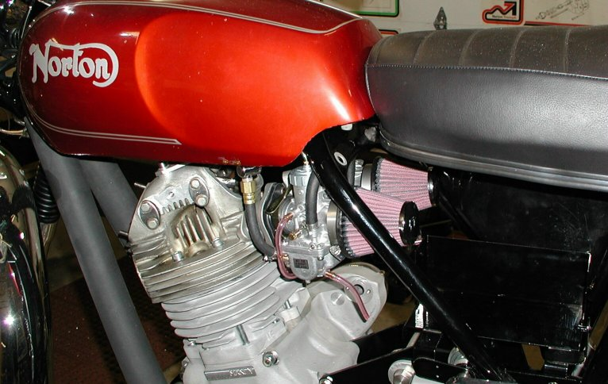
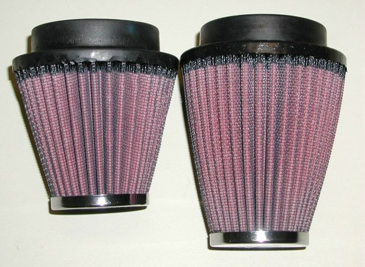
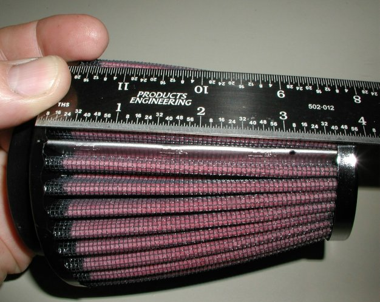
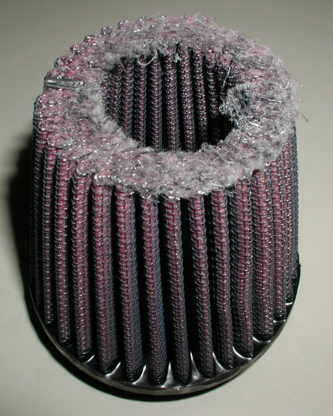
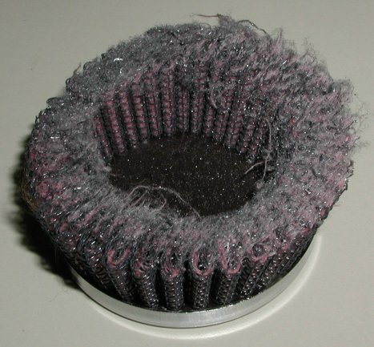
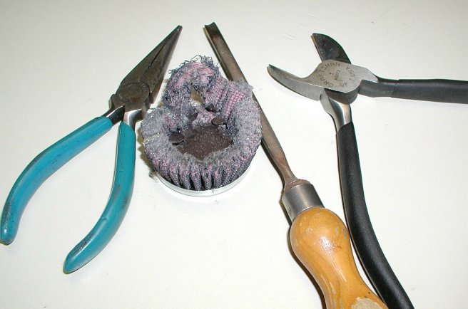
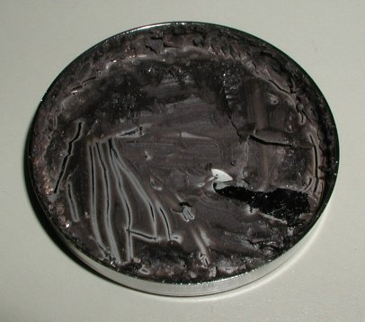
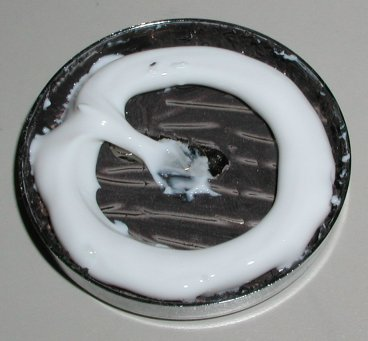
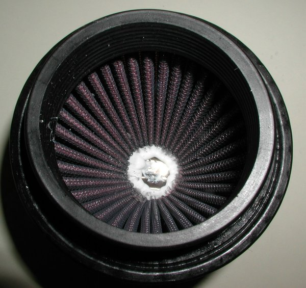

Modifying K&N air filters for twin Mikuni carburetors.
by Fred Eaton
Summary:
Since I wrote this article there is a K&N filter that will work for twin Mikuni carburetors on Commandos
without any modification.
The new filters are (part # 42-100004A,
$50.00
each, as of
02/12/21)
The following article will work if you need to shorten a K&N filter for any reason.
This article covers the procedure for cutting down the K&N tapered air filter that fits the Amal MKII and Mikuni
carburetors when twin Mikuni carburetors are mounted on a Commando.
This also can be a problem when twin Amal MKII carbs are mounted, but mainly pertains to Mikuni carburetors.
The problem with mounting twin Mikuni carbs has been finding good air filters to fit since the Mikuni carb is fatter than the
Amal and has to have manifolds that splay the carbs apart.
I have found that you can cut off the end of the RC-1250 K&N tapered air filter (part # 42-100004,
$60.00
each)
and glue it back on making a shorter filter that fits most Commandos.

A picture of the filters mounted on a Commando.

The modified filter is pictured on the left with the stock RC-1250 K&N on the right.
Procedure:
- The first step is to cut 7/8" off the end of the filter. With a felt pen mark the alloy sealing strip, 7/8" down from the end
or 3" from the bottom of the filter flange. Then using a band saw or a very fine tooth hacksaw, cut the end off at your mark.

The filter marked prior to being cut.

The main filter piece after cutting.

The end piece.
- The next step is removing the old filter parts from the end cap. This can easly be done with a needle nose pliers, a small wood chisel
(curved is better than flat) and a set of wire cutters.
Gently chisel under the filter wire into the glue holding the filter wire to the cap, trying not to push hard against the cap as not to dent
the cap, but enough to loosen the filter wire.
I found this very easy to do and ended up with a perfect cap.
When you have some of the filter wire loose, take the pliers and twist the wire around the plyers, gently ripping the wire loose
from the glue in the cap. You can cut the excess loose wire off with the wire cutters and repeat the process until all the filter
wire has been removed.
You can gently remove any excess glue from the end cap with the chisel, but it does not need to be totally removed,
just enough so the cap fits firmly over the filter body.

The tools used.

The end cap after all the old filter is removed.
- The next step is to glue the end cap back on to the main filter body. I use some silicone sealer that hardens and dries clear.
I place the silicone in the cap as shown in the next picture, enough so that when the cap is placed over
the filter the silicone leaves a bead on the inside of the filter as shown in the last picture.

The silicone applied to the end cap.

The bead of silicone inside the filter.
- The last step is to apply pressure the the filter holding the cap in place until the silicone sets up.
I clamp the filters, but you could place the filter, cap down, and place some weight on the top to apply the pressure.
Return to Old Britts home page
…… Return to Technical Articles
This page was written and designed by F. H. Eaton
& Associates if you have any questions or comments please
contact us at info@fheaton.com